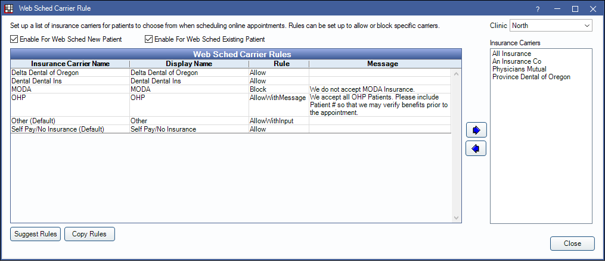

Web Sched Carrier Rule
Web Sched Carrier Rules determine if patients are allowed to enter insurance information when scheduling an appointment via Web Sched New Patient or Web Sched Existing Patient.
In Web Sched New Patient, click Insurance Rules.
Alternatively, in Web Sched Existing Patient, click Insurance Rules.
When enabled, insurance information is saved as a note to the appointment. This allows the practice to verify information before entering an insurance plan for the patient.
Clinic: Select the clinic to apply settings to.
Enable for Web Sched New Patient: Enable Carrier Rules for Web Sched New Patient. If using clinics, use the Clinic dropdown to enable for each desired clinic.
Enable for Web Sched Existing Patient: Enable Carrier Rules for Web Sched Existing Patient. If using clinics, use the Clinic dropdown to enable for each desired clinic.
Carrier Rules
The Insurance Carriers grid on the right displays all carriers entered in Open Dental. The Web Sched Carrier Rules grid on the left displays current rules enabled. Enabled carrier rules allow a patient to select or enter their carrier/insurance information when scheduling an appointment via Web Sched.

Use the Left / Right arrows to add or remove carrier rules.
Double-click an item to add rules and messages.

- Insurance Carrier Name: The carrier name as entered in Open Dental. Cannot be edited from this window.
- Display Name for Patients: The carrier name as known to patients. Can be edited as needed.
- Rule: Determines whether this carrier is allowed for patients to input.
- Allow: Information for this carrier is allowed. Including a message for the patient to see is optional.
- Allow With Input: Only available when Other (Default) is the selected carrier. This allows patients to enter their own insurance information.
- Allow With Message: Information for this carrier is allowed. Including a message for the patient to see is required.
- Block With Message: Information for this carrier is blocked. (i.e., The office does not accept this insurance or the office must input carrier information). Including a message for the patient to see is optional.
- Message to Patients: Include a message to display when a patient selects this carrier. Useful to clarify if insurance is accepted, what information is required, or other helpful details.
Click OK to save a rule.
Suggest / Copy Rules
Suggest Rules: Click to quickly input rules for the top 10 carriers in the practice. The rank is determined by highest volume of sent and received claims in the last 60 days. A warning will display the suggested carriers. Click Yes to continue.
Copy Rules: Click to open the Web Sched Copy Rule window. Allows a clinic user to quickly copy rules between clinics.
- Copy From Clinic: Use the dropdown to select which clinic to copy rules from. Rules for the selected clinic will display in the Web Sched Carrier Rules grid on the right. Highlight one or more rules from the list to copy.
- Copy To Clinics: Highlight which clinic to copy rules to.
- Copy Rules: Click to copy the selected rules from the Copy From clinic to the Copy To clinic.
- Copy to All Clinics: Click to copy the selected rules from the Copy From clinic to all clinics.
- Delete all rules for "Copy To" clinics and replace with "Copy From": Determines which rules remain for the Copy To clinic.
- Checked: Delete all current rules in the Copy To clinic and replace them only with the rules selected from the Copy From clinic.
- Unchecked: Merges the current rules in the Copy To clinic with the rules selected in the Copy From clinic.
When copying rules, a warning will display. Click Yes to continue.